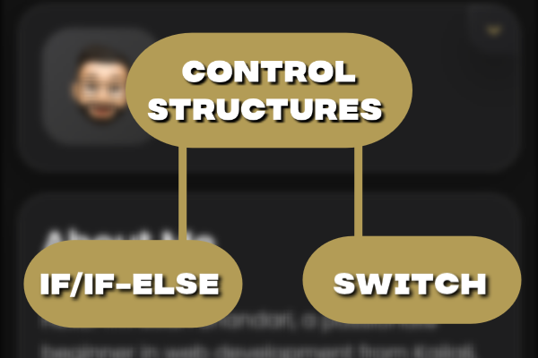

Understanding Control Structures in C Language
Introduction
With a solid understanding of variables and data types, you're ready to tackle control structures in C. Control structures are essential for directing the flow of execution in your programs. In this post, we'll explore conditional statements and loops, two key control structures in C programming.
Conditional Statements
Conditional statements allow your program to make decisions based on certain conditions. The most common conditional statements in C are if, if-else, and switch. Here’s how they work:
1. The if Statement
The if statement executes a block of code if a specified condition is true. Here’s an example:
#include <stdio.h>
int main() {
int number = 10;
if (number > 5) {
printf("Number is greater than 5.\n");
}
return 0;
}
Output:
Number is greater than 5.
2. The if-else Statement
The if-else statement allows you to execute one block of code if a condition is true and another block if the condition is false. Here’s an example:
#include <stdio.h>
int main() {
int number = 3;
if (number % 2 == 0) {
printf("Number is even.\n");
} else {
printf("Number is odd.\n");
}
return 0;
}
Output:
Number is odd.
3. The switch Statement
The switch statement is used when you have multiple conditions to check. It’s more efficient than using multiple if-else statements for many conditions. Here’s an example:
#include <stdio.h>
int main() {
int day = 3;
switch (day) {
case 1:
printf("Monday\n");
break;
case 2:
printf("Tuesday\n");
break;
case 3:
printf("Wednesday\n");
break;
default:
printf("Invalid day\n");
break;
}
return 0;
}
Output:
Wednesday
Additional Examples
1. Finding Discount Based on Purchase Amount
Here’s how you might use an if-else statement to calculate a discount based on the amount spent:
#include <stdio.h>
int main() {
float amountSpent = 150.0;
float discount;
if (amountSpent >= 100) {
discount = amountSpent * 0.1;
printf("Discount applied: $%.2f\n", discount);
} else {
discount = 0;
printf("No discount applied.\n");
}
return 0;
}
Output:
Discount applied: $15.00
2. Checking for Positive and Negative Numbers
This example uses an if-else statement to determine if a number is positive or negative:
#include <stdio.h>
int main() {
int number = -7;
if (number > 0) {
printf("Number is positive.\n");
} else if (number < 0) {
printf("Number is negative.\n");
} else {
printf("Number is zero.\n");
}
return 0;
}
Output:
Number is negative.
3. Checking for Prime Numbers
Here’s how you might use nested loops and if-else statements to determine if a number is prime:
#include <stdio.h>
int main() {
int num = 29;
int isPrime = 1;
for (int i = 2; i <= num / 2; ++i) {
if (num % i == 0) {
isPrime = 0;
break;
}
}
if (isPrime == 1) {
printf("%d is a prime number.\n", num);
} else {
printf("%d is not a prime number.\n", num);
}
return 0;
}
Output:
29 is a prime number.
4. Checking for Consonants in a String
Here’s an example of using a switch statement within a loop to check if characters in a string are consonants:
#include <stdio.h>
int main() {
char str[] = "Hello World";
char ch;
for (int i = 0; str[i] != '\0'; ++i) {
ch = str[i];
ch = tolower(ch);
switch (ch) {
case 'b': case 'c': case 'd': case 'f': case 'g':
case 'h': case 'j': case 'k': case 'l': case 'm':
case 'n': case 'p': case 'q': case 'r': case 's':
case 't': case 'v': case 'w': case 'x': case 'y':
case 'z':
printf("%c is a consonant.\n", ch);
break;
default:
// Ignore vowels and non-alphabetical characters
break;
}
}
return 0;
}
Output:
H is a consonant.
l is a consonant.
l is a consonant.
W is a consonant.
r is a consonant.
l is a consonant.
d is a consonant.
Conclusion
Mastering control structures is essential for programming in C. Conditional statements and loops give you the power to make decisions and repeat actions efficiently. With these tools, you can handle a wide variety of tasks, from simple decision-making to complex iterations and calculations.
Experiment with these examples and modify them to fit your own needs. In the next post, we will dive into functions, which will allow you to modularize your code and make it more reusable and organized. Stay tuned for more on this journey to becoming a proficient C programmer!